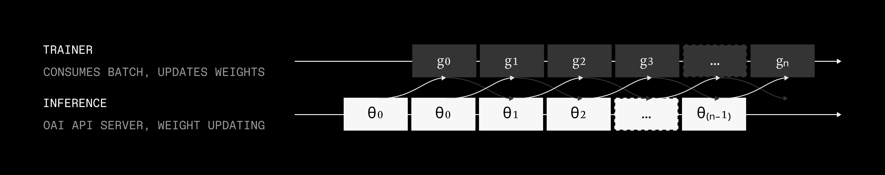
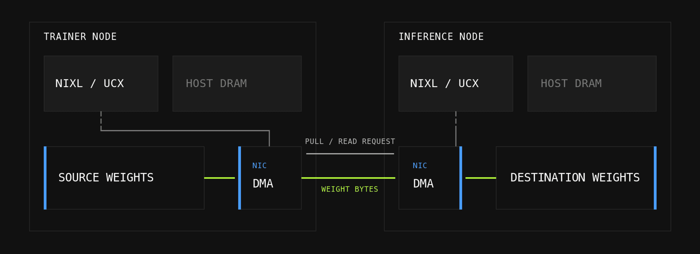
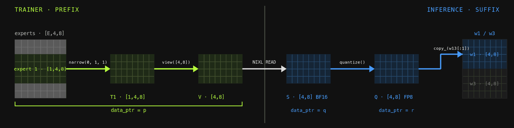
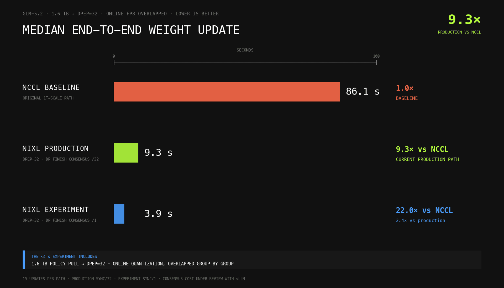

Prime Intellect在训练万亿参数模型时把单步时长压到了5分钟以内，却暴露了一个新瓶颈：每个优化步之后要把更新后的策略权重从训练端同步到推理端，这一步无论其他环节多快都卡在60到90秒。本文用NIXL与ModelExpress重建这条交接链路，把GLM-5.2的权重转移压到了个位数秒。
实测给出一组清晰对比：NCCL基线中位耗时86.1秒，NIXL按每32波同步一次为9.3秒，改成每波都同步后进一步降到3.9秒。这一方案还摆脱了NCCL的静态进程组约束，为后续容错、弹性扩缩容的推理铺路。
被训练的模型每天都在变大，要高效地服务这些模型，推理端需要更多的算力和显存。后训练（如RL）阶段由此引入一个常被忽视的瓶颈：每走完一个优化器step，策略都要从训练端同步到采样端（sampler），这需要在多个worker之间搬运模型权重或权重变化量。当这些数据涨到数TB量级时，搬运本身就成了决定整条管线速度的关键。
常见的两种解法各有短板：NCCL适合数据中心内部更新，但要求静态进程组；文件系统方案（常常带增量delta更新）适合跨数据中心，却慢在远端文件系统的上传。下面先看这两条老路的局限，再看我们怎么用NIXL重新设计。
先看清异步RL的结构：训练端在一条时间线上持续更新梯度和策略参数，推理端则在另一条时间线上服务请求并消费最新的策略版本。这两条并发时间线之间，就是每次优化步后要做的权重同步。

最普遍的做法是NCCL。但NCCL传输依赖静态进程组，这让做容错和弹性（动态扩缩节点）几乎不可能；并且带分片感知的P2P传输会引入同步点，常常用不满带宽。当然，如果工作负载不需要容错和弹性，NCCL通常仍是最好上手的方案，性能也够。
第二种是基于文件系统的增量更新，常借助共享文件系统（如S3），上传一整份新权重或与上一步的delta。远端文件系统通常较慢，这类方案只适合较小模型，或当推理引擎能以可扩展方式做增量重载时可用，典型场景是跨数据中心。
对我们而言，NCCL越来越慢，其静态进程组也成为走向容错、可自动扩缩推理路上的阻碍。于是我们决定改用基于RDMA（远程直接内存访问）的权重传输来解决，这要求先解决一个“模型无关（权重格式）”带来的有趣问题。
诚实地说，这项工作深受Lequn Chen的“跨节点RL权重转移2秒实现”启发，我们在其上加了点“魔法”来应对vLLM与prime-rl之间的一些兼容怪癖。RDMA本质上是直接访问远端内存：在这里就是远端节点上的一块GPU显存。这让我们能绕过同步，直接在源端与目的端的网卡（NIC）之间传输，绕开CPU。
我们只关注单边（one-sided）RDMA：它绕开CPU，降低延迟。RDMA可粗分为两种范式：PUSH与PULL，名字很直白：PUSH把本地数据写入远端内存段，PULL则从远端拉数据写进本地内存段。下面这张图展示NIXL PULL的拓扑。

目前大多数数据中心级机器每块GPU配一块400Gb/s的网卡；若用上ConnectX-8 SuperNIC（例如G/B300集群）则是800Gb/s。我们可以直接利用这套网络和RDMA，在集群内跨节点读写显存。
这些抽象在多个开源库里已经实现好，本工作主要使用nvidia-dynamo团队开源的ai-dynamo/nixl，它构建在openucx/ucx（Unified Communication X）之上：UCX抽象了传输层原语，让NIXL某种程度上与底层传输方式无关，也让我们不必操心rkey、lkey以及内存一致性模型这些底层细节。
先算一算最佳情况能到多快：即便写出完美的代码，也有一个无法逾越的下限。设S为bf16权重的总负载，B_NIC为单块GPU网卡的可用带宽。本工作以GLM-5.2为例，bf16下S约1600 GB。
假设训练端FSDP并行度为64（N_FSDP=64），推理端数据并行 × 专家并行世界大小为32（N_EP=32），权重在rank间均匀分布（可安全假设专家权重占存储的大头、其余可忽略）。
于是每个训练rank、也就是每张训练网卡要发出S/64，即1600/64=25 GB；每个推理rank/网卡要接收S/32，即1600/32=50 GB。推理网卡上会流过更多数据，所以带宽下限由接收侧决定：
T_min=max(发送, 接收)/B_NIC=50GB/B_NIC。代入网卡参数：400Gbit/s换算约50GB/s时，理论下限为1.0秒；若用800Gbit/s（约100GB/s），则为0.5秒。换算下来，理论天花板是1.0秒。
难道真的就这么简单：拿一个本地指针和一个远端指针，让网卡把字节搬过去就行？显然不是，否则你也读不到这篇博客了。剩下的真正难点在于：训练端和采样端（这里是vLLM）存同一个逻辑权重时，物理布局并不一定相同。
对一个基于NIXL的方案这尤其关键：我们能让网卡搬字节，可怎么知道训练端字节和推理端字节之间的映射？如果中间还有加工处理怎么办？接下来的章节就讲我们的处理方式。
vLLM是从checkpoint格式的张量出发的：它们是磁盘或Hugging Face Hub上存的名字、形状和dtype：然后被变换成运行时kernel格式。最终形态取决于模型架构、并行策略、GPU、量化模式和所选kernel。
举几个例子就能体会这种混乱：某个MoE loader可能把gate投影和up投影（w1与w3）打包进w13_weight；量化kernel还可能把权重和scale做cast、转置、打包或swizzle，改造成后端专用布局（如给tcgen05用的那种）；另一些kernel又可能把w1、w3打包成w31_weight。运行时格式没有上限。
因此一个训练端参数并不天然对应到某一个明显的推理端地址。硬编码这种映射，就得为每种模型、每个kernel、每种配置复制一遍vLLM的loader逻辑。而把所有变换都放到训练端做，又要求推理感知的分片，还得腾出等于另一个模型大小的临时显存。
但我们可以做得更好：用一点巧妙的PyTorch手段，把对一个底层存储执行过的所有操作“录”下来，存成一张图。这张图可以在第一个物化出新存储的视图处自然切成两段：例如一次到另一种dtype的cast就在这里。
切点之前的每一处操作都是保存存储的视图：它只是一个变换了基础存储stride和offset的操作，配合基础指针，就能以变换后的stride与offset去“看”远端存储（前缀）。到了切点之后，剩下的就是真正操作数据的步骤，而不只是改offset和stride。这段后缀会在推理端GPU上，对前缀传输过来的结果做重放（replay）。

这条trace思路借鉴了vLLM的Ray Direct Transport概念验证：它用一个tensor子类去发现正在运行的模型期望权重以何种方式装载。prime-rl又额外多了一层布局边界：训练端checkpoint用的是prime-rl自己的命名和布局，并不是Hugging Face checkpoint的一比一拷贝。
在初始化阶段，我们为TrainerTensorTable描述的每个张量创建一个LazyWeight包装。每个包装携带源名字、shape、传输dtype、设备与recorder，但本身不持有任何权重数据。我们先让这套“惰性状态”走一遍正常的prime-rl到HF的转换链路，再把得到的HF命名值传入vLLM真正的load_weights路径。
LazyWeight.__torch_function__ 会拦下受支持的操作，如view、narrow、split、permute、contiguous与dtype cast，把每个操作追加进一条操作链；meta张量上的等价操作会传导出最终的shape、stride与dtype，却不动任何真实模型存储。当loader抵达它的终点copy_ 时，我们记录下来一次RecordedCopy：原始训练端来源、完整的操作链、以及确切的落点模块/张量名/offset/shape/stride。
这套机制在无需为每种模型和kernel手写映射的前提下，把一个逻辑训练端权重连到了真实的vLLM kernel存储上。对每条记录的copy，plan_tensor_replay找出最长的保存存储前缀，生成的TensorReplayPlan含源offset/shape/stride（用来访问远端存储），再加上必须本地重放的、物化或改dtype的后缀。路由层再把那个源视图映射到训练端各FSDP分片上。
trace和规划只做一次，每次权重更新时推理端直接复用这套plan：NIXL把路由好的源字节拉进GPU显存，重放后缀在推理端GPU上执行，最后的一次copy_ 更新真实kernel张量。
下面跟着一个有代表性的专家张量走一遍全系统。具体名字和操作会随模型、kernel而异，但生命周期一致。
在本方案采用的FSDP布局里，一个逻辑张量沿第0维切分，某个训练rank可能只拥有其若干行的扁平区间。TrainerTensorTable记录寻址这些分片所需的信息，包括：全局张量名与shape；传输dtype（默认BF16，若模型给张量标了keep_in_fp32_for_weight_transfer则是FP32）；所属transfer group；负责的NIXL agent、逻辑offset、元素个数与已注册的GPU地址。ModelExpress在初始化时发布这张表。
推理端创建一个带训练端源名字、shape与传输dtype的惰性张量，把它跑过正常的Prime到HuggingFace转换和vLLM真正的load_weights路径。LazyWeight.__torch_function__ 记录view、narrow、split、permute、contiguous及dtype cast等操作；loader走到终点copy_ 时，trace里已含训练端来源、完整操作链与确切的目的张量/offset/shape/stride。
plan_tensor_replay在第一个改变dtype或分配新存储的操作处切开操作链。select、narrow或产生视图的transpose/permute仍引用源分配，被编译进源offset/shape/stride（前缀）；contiguous、dtype cast、量化等物化操作创建新存储或新表示，放到推理端GPU重放（后缀）；终点copy_ 写入实时kernel参数，记录为目的视图。
所以前缀只负责寻址，传输完成后只重放物化的后缀。具体规则如下表所示。
源视图可能横跨多个训练端rank。路由把该视图与FSDP的所有权求交，生成填满推理端staging张量所需的若干次读。每条路由只含：训练端agent、源地址、目的地址、字节数。NIXL把它们当作直接的GPU显存读来执行，多个训练端分片可以往同一个推理端staging张量的不连续区间里写入。
读完成之后，每个推理rank依次：在staging显存上重建记录的源视图；执行物化后缀（必要时包含在线量化）；把结果拷入记录的vLLM目的视图；再跑这层剩下的装载后处理。
把配置weight_broadcast.overlap_transfer_and_replay打开后，推理端可以在NIXL还在传输第N+1组时，重放并量化第N组。这需要至少两块staging缓冲，但能隐藏掉大部分在线量化的时间。
用一个例子串起来：假设训练端GPU0持有含专家7、8的一段连续张量 [E=2, M=4, N=8]；推理端rank 0和1各自narrow到一个专家，分别发起一次NIXL READ进各自的BF16 staging张量，重放FP8量化后把FP8权重拷进本地vLLM张量；量化产生的scale张量单独发出。
前面六步对应到工程实现里，可概括成“初始化一次、之后每次更新复用”两个阶段。初始化阶段，ModelExpress发布训练端张量表与peer元数据，推理端trace一遍真实转换与vLLM loader，把链切开并算好分片路由，再分配并注册staging区、备好可复用的读描述符；之后每一次策略更新，训练端暂存每组并用带版本号的NIXL ready通知发出，推理端向每个在线的训练rank重发预先备好的NIXL READ，并在接收第N+1组的同时重放（必要时在线量化）第N组，一次READ完成后归还训练端arena信用。
我们测量time/broadcast_weights，它覆盖vLLM全生命周期：/pause、/update_weights、/resume。测试环境是12台DGX H200节点，每台8块400Gbit/s Mellanox网卡。GLM-5.2先在8台节点上用FSDP=64、EP=8训练，再装载进跨4台节点的DPEP=32推理端；推理端施加fp8_per_block在线量化。跑了20次策略更新，对每条路径按等长15次更新窗口报告中位数。
NCCL基线把每层收集到rank 0再广播，中位耗时86.1秒；生产级NIXL按原先的每32波cadence同步，能到9.3秒。距最初1秒估算的差距主要来自两处：一是每个推理rank实测接收量约为理想50GB的2.2倍（部分操作链过早物化，稠密参数也不遵循简单的MoE分片模型），把网络下限抬高到约2.2秒；二是 /pause要为等待分布式暂停共识额外花上3到6秒。

传输阶段，每块网卡实际达到约45GB/s，接近其50GB/s的峰值。余下的延迟大头来自等待暂停共识，而非传输本身。
启用DPEP后，vLLM由DPCoordinator协调请求波（wave）。某个rank收到 /pause会置pending_pause=True，但它不能立刻停下：其他rank可能仍会进入EP集合通信，提前停其中一个参与者会死锁整组。因此这个rank会继续服务正常请求，直到每个DP rank都同意已有一暂停在等待。
ParallelConfig.sync_dp_state通过一次all-reduce达成这个一致。为免每个服务步都加一次all-reduce，vLLM默认每32波才做一次共识。
在异步RL中，推理引擎始终是满载的，所以在那32波期间它会继续处理真实请求；而新策略要等每个rank都到下一个共识点才能应用。这就解释了为什么共识cadence直接卡住了同步延迟。
我们把暂停共识从每32波改成每波都做，并重跑同一套基准。端到端中位时间降到3.9秒：这3.9秒已包含把完整1.6TB策略传进DPEP=32推理端并跑在线FP8量化。由于下一组的传输与当前组的重放/量化重叠，量化成本基本被藏住了。
vLLM团队正与我们合作测量sync/1是否影响服务吞吐，并打算把共识cadence做成可配置。
地基已经打好，但这项工作中最大的解锁点还尚未落地：ModelExpress与NIXL不创建静态进程组，我们想顺着这条路实现自动扩缩容与快到极致的推理启动时间。这与跨EP副本的容错（EP内部的容错是另一回事）以及液态算力（liquid compute）紧密相关。
若你对这类课题感兴趣，欢迎通过Prime Intellect官网的招聘页联系团队。
参考：https://www.primeintellect.ai/blog/nixl-modelexpress-weight-transfer